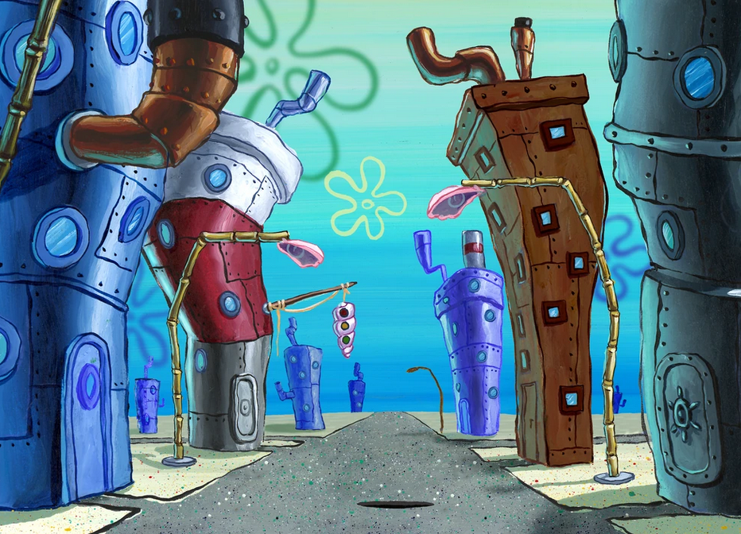
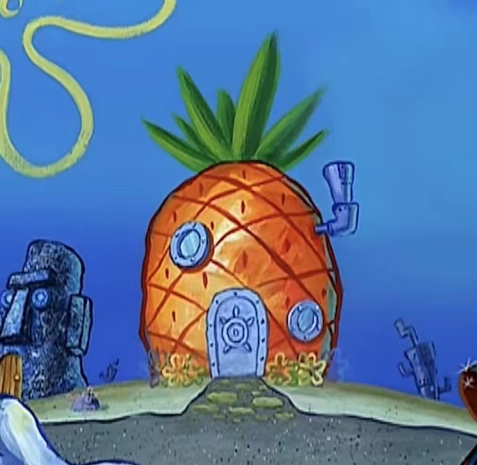

Environmentalism is commonly used to encompass the range of concerns and actions associated with mitigating negative human impacts on the environment (Davies 2020:259). Modernity has brought about significant advancements in science and technology, which enable humanity to better understand and manipulate the natural world. These progresses, however, have also led to unprecedented environmental degradation and pollution, which have prompted a growing call for environmentalism. The dark side of modernity could make the world disconnected, people alienated. Hence, tragedies ensue.
Stephen Hillenburg’s marine biology background played a significant role in shaping his concern for environmentalism, particularly for the marine environment. His knowledge enabled him to see firsthand the negative impacts of human activity on marine life and their habitats. He infused his passion into SpongeBob SquarePants, which not only entertains but also educates and inspires the audience to protect the environment.
5.1 Jellyfish Fields
Jellyfish Fields is a vast underwater meadow filled with different types of jellyfish, crabs, and snails, located near the town of Bikini Bottom (Jellyfish Fields 2023). The landscape is vibrant and colorful, with tall green grass, pink and purple flowers, and swaying jellyfish tentacles. Hills and valleys create a sense of depth and movement, forming a sense of rolling and undulating. The ground is covered in soft, sandy soil, and small rocks and boulders are scattered throughout the terrain. Surrounding the fields, there are coral reefs and underwater caves, which add to the natural beauty of the area. The overall atmosphere of Jellyfish Fields is peaceful and serene, making it a perfect space for characters to go jellyfishing, have fun, and relax.
Fig. 8. Jellyfish Fields
Jellyfish Fields is a space primarily occupied by wildlife. It holds empirical relevance to humanity in that it can be considered as an ideal example of a national park. According to the International Union for Conservation of Nature (IUCN), national parks are clearly defined geographical spaces designated for ecosystem protection and recreation (Bosworth and Curry 2020:229). In the show, it is mentioned in “Jellyfish Hunter (S02E39a)” that jellyfish should only be captured for the purpose of sport rather than profit. Furthermore, in the episode “SpongeBob’s Last Stand (S07E134)”, there is a specific ranger to manage the place, and jellyfish hunters are supposed to provide valid license to go jellyfishing. The plan for Jellyfish Fields is ideal, as it allows residents in the neighborhood to interact freely with wildlife, which suits the ultimate goal of establishing national parks and protected areas.
Hillenburg also projects environmental issues of national park and animals onto the show, such as poaching the creatures for ingredients of food (“Jellyfish Hunter”) and destroying natural environment for constructing highways (“SpongeBob’s Last Stand”). Apart from the crisis, his vision for environmental protection is explicit. There are always heroes in the show, like SpongeBob and Patrick, to stand up and fight against the evil forces to protect the peaceful natural landscape.
5.2 Bottomite Houses and Buildings
The landscape of Bottomite houses and buildings is characterized by its haphazard and unconventional appearance. Their structures are built out of a mishmash of found objects that are possibly falling from the land, such as old appliances, scrap metal, and discarded toys. generally, buildings in Downtown Bikini Bottom usually have a patchwork look with a variety of textures and colors, just like a collage. The structures often lean or slant in different directions, the surfaces bent and dented, endowing the space a slightly disorienting feel. Almost every building has an exhaust-pipe-like chimney, suggesting that they may once have been car mufflers.

Fig. 9. Bottomite Houses
The town is also littered with debris, garbage, and various discarded items that have been repurposed into functional objects. One of the most prominent examples is SpongeBob’s house. The house has the shape of a large yellow pineapple, complete with leafy green top and spiky leaves. The pineapple is said to be originated from land and falls off from a ship navigating through the sea. Then, it turns into a house that is selected by SpongeBob (SpongeBob SquarePants’ house 2023). Other iconic examples involve Mr. Krabs’ Krusty Krab, which was once a lobster trap, and Plankton’s Chum Bucket, as its name suggests, a bucket.

Fig. 10. SpongeBob’s Pineapple House
Fig. 11. Krusty Krab
Fig. 12. Chum Bucket
Overall, the landscape of Bottomite houses and buildings is a reflection of the show’s themes of resourcefulness and environmentalism. The residents of the area make do with what they have, rather than relying on new materials, and this approach to building and living is presented as a positive one. They view the littered objects with ingenious eyes and make creative designs. In this way, the show implicitly encourages viewers to consider how they too can reduce waste and conserve resources in their own life.